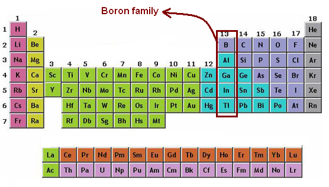

What chemicals are in them?
The main chemical transistors are made of is Silicon. Silicon is a semi conductive element found in sand. Its semi conductive nature means that it is neither conductive, like metal, nor insulative like rubber. It isn’t until the doping process that silicon either an n-type conductor, where electrons flow out, and a p-type conductor, where electrons flow in. Elements like arsenic, phosphorus, and antimony make silicon a, n-type, and boron, gallium, and aluminum make it a p-type. For more on how they work, please visit this link.